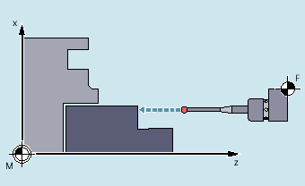
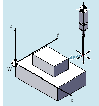
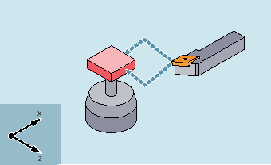
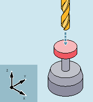

A measuring cycle is a predefined NC program in which a specific, generally valid, measuring operation, such as determining the inner diameter of a cylindrical workpiece, is programmed. Parameters are used to adapt to the specific measurement situation; these parameters are transferred to the cycle at the call.
Measuring cycles are available for workpiece and tool measurements for turning and milling technologies.
In workpiece measurement, a probe is moved up to the clamped workpiece in the same way as a tool, and the measured values are acquired. The flexible structure of the measuring cycles makes it possible to perform nearly all measuring tasks required on milling or turning machines.
|  |  | |
Example: Measuring a workpiece at the turning machine | Example: Measuring a workpiece at a milling machine |
The result of the workpiece measurement can be optionally used as follows:
Compensation in the work offset
Automatic tool offset
Measurement without offset
In tool measurement, the loaded tool is moved up to the probe and the measured values are acquired. The probe is either in a fixed position or is swung into the machining area using an appropriate mechanism.
|  |  | |
Example: Measuring a turning tool | Example: Measuring a drill |
The tool geometry measured is entered in the appropriate tool offset data set.
This documentation of the measuring cycles only refers to external programming, and is therefore restricted to describing the syntax and parameters
See the Programming Manual Measuring Cycles for a detailed description of the measuring cycles.
The program line specified under "syntax" indicates how the cycle call should be programmed.
Special care must be given regarding the following points:
Correct cycle name
Call sequence of the transfer parameters
All cycle parameters are described with the following data in the table under "Parameters":
Meaning
Value range
Dependency on other parameters
Parameters marked with "reserved" must be programmed with the value 0 or a comma so that the assignment of the following call parameters matches the internal cycle parameters. Exception: string parameters with the value "" or a comma.